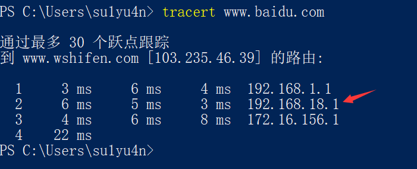

最近实在忍不了家里的WiFi了，经常丢包和断线，游戏没法打，网也上着费劲，因此决定对WiFi进行优化。
家里的网络结构是光猫接上路由器的WAN口，平时手机电脑上网时连路由器，路由器连光猫。就是那种很常见的小型家庭网络。
优化光猫
关无线功能
仔细看光猫，发现开启了路由模式（无线工作指示灯亮着），也就是说光猫既要进行光电信号的转换、拨号还要发射无线信号。但是光猫这玩意性能很差，这也是为什么我们要花钱买路由器。因此我们要把光猫的无线关掉。
网上说可以让光猫开启桥接模式，让路由器来拨号。但是联通的光猫设置起来好像比较麻烦，我也没找到设置选项。也有人说就让光猫拨号就行，一般情况下不用搞，而且改桥接还可能被运营商限速。所以这里就只关掉光猫的wifi功能，没调桥接，光猫的DHCP也没关。
- 首先，我们先查看下光猫的IP地址
这大概就是光猫的ip地址了，我们再用tracert看一下

第一跳肯定是我们的路由器，第二跳肯定是光猫，可见光猫确实是192.168.18.1这个IP地址了。
- 进入光猫配置页面，关掉Wifi功能。这里光猫的密码通过扫光猫上贴的二维码得到，如果光猫上到处没有写的话就要问下运营商了。
既然关DHCP费劲，调桥接模式更费劲，那光猫就没什么可优化的了。
关闭防火墙
就光猫这性能，防火墙铁定是鸡肋，不会有什么用的。家里的路由器开防火墙就足够了。我们把光猫的防DoS，ipv6spi统统关掉，节省一些光猫的性能。
优化路由器
开启QoS
有时候可能是家里看视频占带宽太大，网很卡。看到路由器CPU和内存负载挺低，那开个QoS吧。下载速度自己应该知道，上传速度，自己测一下就完事了。
总结
想小优化一下，发现其实没太多可优化的。要想优化得细节一些又要花很多时间捣腾，先就这样吧。